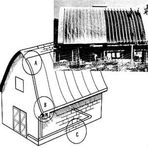

SOLAR PHASE II Air enters the collector through holes in the roof (A) and flows down to a manifold under the eave, then enters the building through a window-mounted fan (B) and is drawn into distribution tubes (C) buried underneath concrete.